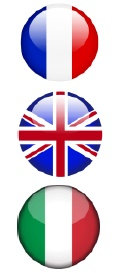
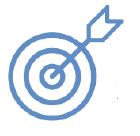
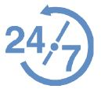

MINZANI JULIEN
minzani.julien@outlook.fr
06 03 85 74 37
53 Avenue de Verdun, 06800
Cagnes sur mer
Né le 26/01/1991 - Marié

CONCEPTEUR DEVELOPPEUR INFORMATIQUE
"Motivé à la recherche d'un environnement de travail innovant et compétitif "
Force de proposition

Focus

Disponible
PARCOURS PROFESSIONNEL
2017/2018 - Stage Concepteur Développeur Informatique
(Touchline Interactive - Sofia)
Réalisations lors du stage à compléter
Réalisations lors du stage à compléter
Réalisations lors du stage à compléter
Réalisations lors du stage à compléter
2014/2017 - Technicien mécanique et manutentionnaire
(AJ MARINE - Valbonne)
Mécanique et manutention sur Yachts de 40 à 100m
2013/2014 - Analyste de Signaux Telecom
(Armée de Terre - Creil)
Développer une méthode de travail pour le traitement de données de masse de signaux Telecom, projet THALES horizon 2020
Analyse poussée de caractéristique de signaux Telecom
Implémenter la Base De Données pour traitement automatique, en collaboration avec le CNES
2011/2013 - Analyste de Signaux Radar
(Armée de Terre - Creil)
Détecter, localiser et analyser des données satellitaires du system ELISA de THALES
Définir le type de radar et inscription en Base De Données
Développer une IHM de communication avec le Satellite sous LABVIEW
2009/2011 - Formation de Sous Officier
(Armée de Terre - St Maixent l’Ecole)
Elève/Formateur à l’ENSOA, jusqu'à 30 personnes
COMPETENCES
C#.NET
HTML5 + CSS3
PHP
JavaScript
Transact-SQL
Visual Studio
SQL Server
PowerAMC
MySQL
Expérience de programmation LABVIEW
Analyse de signal EM et analyse du train binaire
FORMATIONS
2018 : BAC+4 Concepteur Développeur Informatique (AFPA)
2013 : Formation LABVIEW (ESIGELEC)
2011 : Certificat Technique Niveau 1 - Détecteur et Analyste de signaux Electromagnétiques (ESAT de Rennes)
LOISIRS
Programmation d’IA en LeekScript, dépannage informatique, jeux vidéo
Moto sur Piste, Sports de Combats, Sports Co divers, Handball (Equipe de France -14), Ski